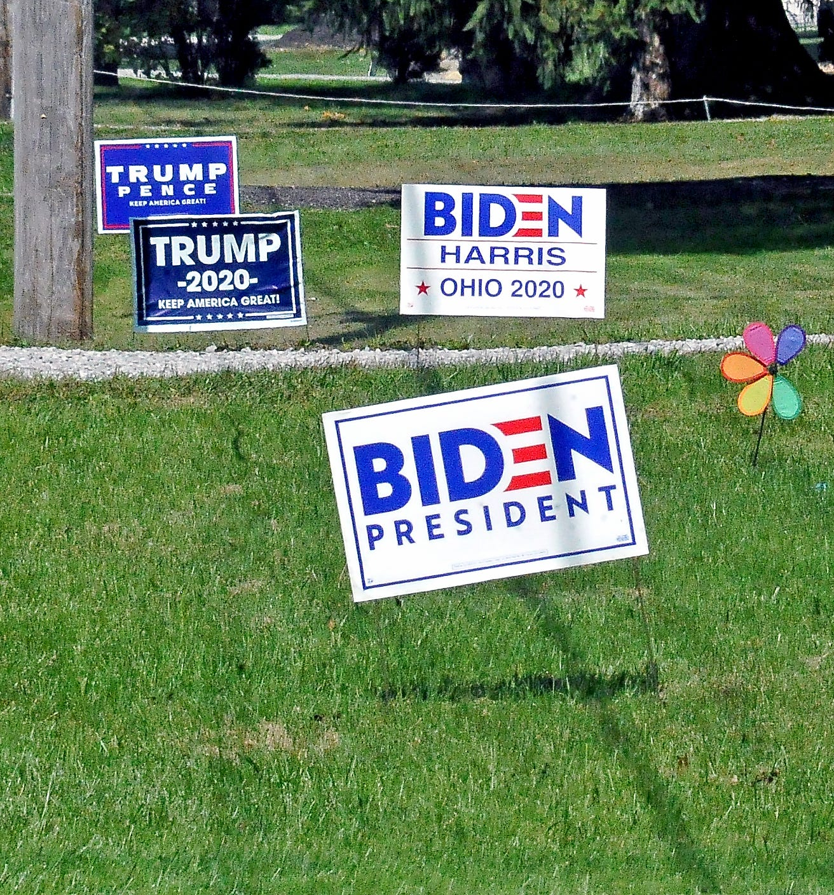
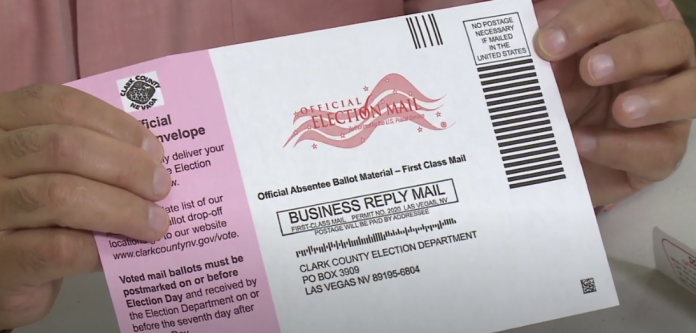

Goodbye 2020

A Contentious Election
The 2020 Presidential Election was one unlike any other. In the face of a pandemic, many issues surrounding voting occured, the most prominent being mail-in ballots and voter fraud. While the election was extremely secure, after the election turned in Vice President Joe Biden's favor, our current President began sending out tweets calling the election a case of voter fraud.
In fact, throughout the election cycle, President Trump actively diminished trust in our election process by claiming mail-in ballots would lead to voter fraud - a claim that has been proven false and creates dangerous rhetoric.

Mail-in Ballots
With the pandemic preventing many citizens from exercising their right to vote, mail-in ballots played an important role. Many voters were worried about standing in long lines, especially in places that were at high-risk for COVID.
As helpful as these ballots were, though, President Trump was able to convince his base they were anything but. Additionally, many states such as Pennsylvania, Wisconsin, and Michigan were not allowed to begin processing these ballots until Election Day. This made the process of counting the votes much less transparent, despite still being credible.

Election Lawsuits
As Trump began losing in battleground states, he filed lawsuits to contest the results of these states. Spreading the news of these lawsuits, he began calling these states to "Stop the count" and his followers quickly listened. At vote counting centers, his followers emerged with signs and calls to stop counting votes, banging on glass windows and disrupting the election process.
In Pennsylvania, he began intervening in the decision to allow ballots received up to three days after the election (even if they were postmarked by November 3). While this is far from over, these lawsuits have made the American people extremely uneasy and continued to divide us.